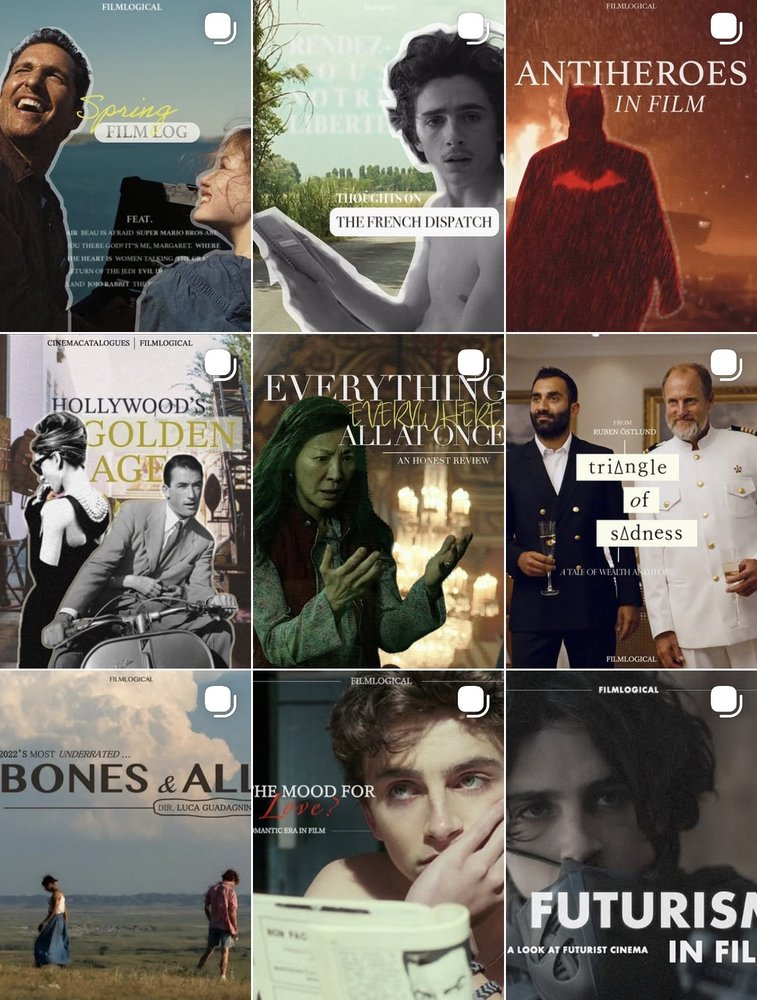

An interactive map of historic U.S. tornadoes, with city search, animated paths, and a timeline built on NOAA/SPC data.
Next.js · TypeScript · MapLibre GL · Supabase/PostGIS · Vercel

fun side projects i've built over the past few years
An interactive map of historic U.S. tornadoes, with city search, animated paths, and a timeline built on NOAA/SPC data.
Next.js · TypeScript · MapLibre GL · Supabase/PostGIS · Vercel
Personalized movie analytics and recommendations built from Letterboxd viewing and review data.
React · Python · TMDB API
A film publication I founded and grew to 1.2k+ followers, featuring original film criticism and editorial content.
Instagram · Photoshop · Premiere Pro

An AI-powered internal sourcing platform with dashboards and investment pipeline analytics for venture funds.
Airtable AI · JavaScript
the website you're currently looking at!
HTML · CSS · JavaScript